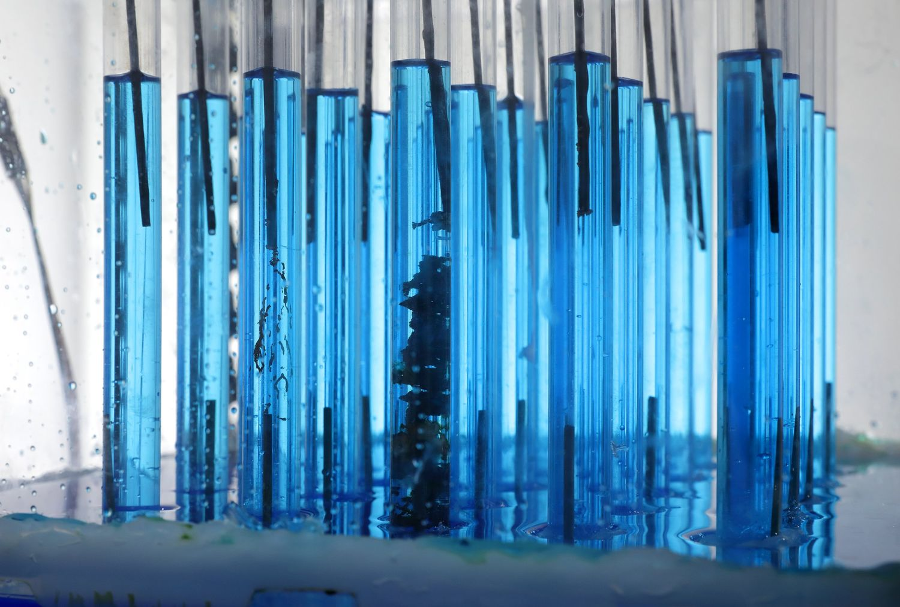

A network forecasts Boston's electricity demand every hour. Each of its 25 neurons drives one copper cell: the more a neuron carries a forecast, the longer its cell gets current. When copper bridges a cell, that neuron is gone for good.
01This hour
One forecast, 25 pulse times
—
Observed demand
—
neurons alive
—
Forecast
Pulse time per cell
A 1,500 ms budget is divided in proportion to each neuron's contribution, |activation × output weight|. One neuron = one cell.
02The body
25 tubes of copper sulfate
In each tube a copper cathode hangs from above and an anode rises from below. While its neuron's pulse runs, copper leaves the anode and builds up on the cathode, growing down toward the anode.



03Last 72 hours
Demand and forecast
Each forecast is drawn at the hour it was made for.
Observed demand, NEMA zoneForecast